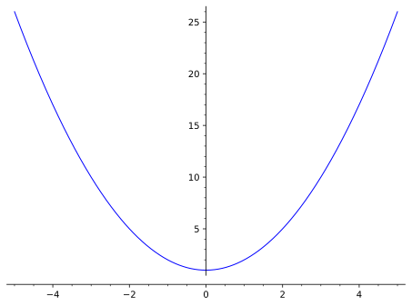
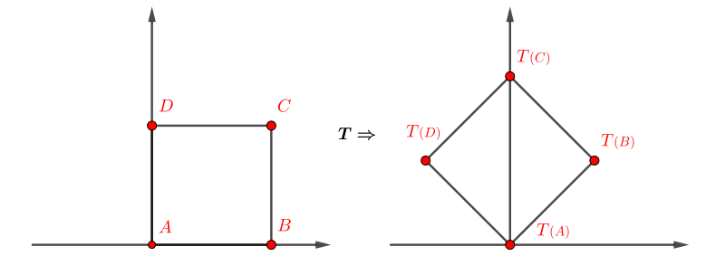
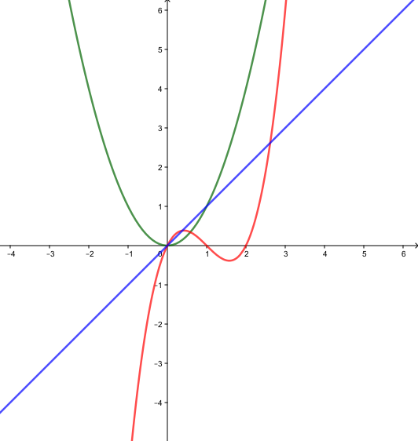
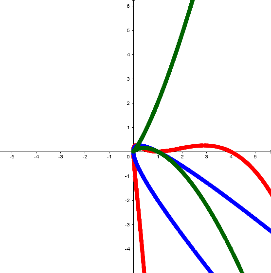
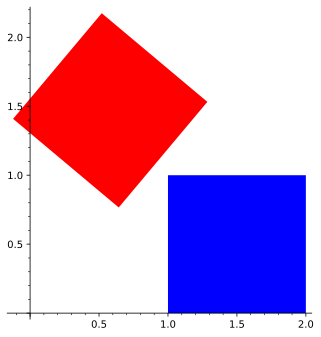

Le concept de fonction \(y=f(x)\) associant à tout nombre réel \(x\) un autre nombre réel \(y\) est bien connu. Ces fonctions sont souvent représentées graphiquement, comme à la figure suivante.

Figure2.1.1.La fonction \(y=x^2+1\)
Considérons maintenant la figure suivante dans laquelle un carré a subi une rotation de \(45^\circ\text{.}\) La transformation qu’a subie le carré est un exemple simple de transformation linéaire, où en fait chaque point de \(\R^2\) a subi la rotation. On a donc un premier exemple géométrique d’une fonction de \(\R^2\) vers \(\R^2\text{.}\)

Figure2.1.2.Une première transformation
Dans cette section, on définit la notion de transformation linéaire et l’on regarde les propriétés de ce type de transformations. On aborde aussi le concept de matrice, étroitement lié aux transformations linéaires.
Sous-section2.1.1Définition et premiers exemples de transformations linéaires
Définition2.1.3.
Une fonction vectorielle de \(\R^n\) vers \(\R^m\) est une fonction \(T\) qui prend un vecteur \(\vec{x}\in \R^n\) et lui associe un vecteur \(\vec{y}\in \R^m\text{.}\) On écrit alors \(T(\vec{x})=\vec{y}\text{.}\)
Exemple2.1.4.Des transformations quelconques.
Voici quelques exemples de transformations:
Liste2.1.5.Des transformations quelconques
La norme d’un vecteur peut être considérée comme une fonction de \(\R^n\) vers \(\R\text{,}\) où \(T_1(\vec{u})=\sqrt{u_1^2+u_2^2+\cdots +u_n^2}\text{.}\)
La fonction \(T_2(t)=(\cos(t),\sin(t))\) est une fonction de \(\R\) vers \(\R^2\text{.}\)
La fonction \(T_3(x,y)=(x^2,y-xy)\) est une fonction de \(\R^2\) vers \(\R^2\text{.}\)
La fonction \(T_4(x,y)=(x-y,x+y)\) est une fonction de \(\R^2\) vers \(\R^2\text{.}\)
La fonction \(T_5(x,y,z)=(\sin(x),\ln(y),z^2-x,4)\) est une fonction de \(\R^3\) vers \(\R^4\text{.}\)
La translation de \(\vec{w}\text{,}\) qui transforme tout vecteur \(\vec{u}\) par \(T_6(\vec{u})=\vec{u}+\vec{w}\text{.}\)
Une étude exhaustive de toutes les fonctions serait beaucoup trop difficile et sortirait du cadre de ce cours. On se restreint donc à un type particulier de fonctions, dites linéaires, exception faite de la transformation représentant une translation 2.1.5:6. Pour l’instant, la raison de ce choix est surtout de nature géométrique. Il est assez difficile de représenter une fonction vectorielle, principalement dû à la dimension des vecteurs. Les fonctions de la forme \(z=f(x,y)\) prennent un couple de variables à l’entrée et donnent un nombre réel comme résultat. Celles-ci peuvent être représentées graphiquement dans un espace à trois dimensions où le plan \(XY\) représente le domaine et l’espace donne l’image des points du domaine. Contrairement aux fonctions de \(\mathbb{R}\) vers \(\mathbb{R}\) comme \(y=x^2\text{,}\) on obtient une surface plutôt qu’une courbe. La figure ci-dessous illustre la fonction \(z=xy^2+y^2\)Figure2.1.6.Une fonction de deux variables Par contre, pour illustrer une fonction comme la fonction \(T_3(x,y)\) de l’exemple 2.1.4, il faut deux dimensions pour le domaine et deux pour l’image. On contourne cette difficulté en utilisant deux copies de \(\R^2\) comme dans la figure suivante.


Figure2.1.7.La fonction \(T_3(x,y)=(x^2,y-xy)\)
Dans la figure, le plan de gauche représente le domaine et dans le plan de droite, on retrouve l’image de chacune des courbes. Certaines courbes ont été colorées afin de pouvoir associer la courbe originale, à gauche, et son image par la transformation, à droite. En réalité, tous les points de \(\R^2\) sont transformés, mais le graphique de l’image ne serait pas très intéressant si on les montrait tous.
On constate assez rapidement que la visualisation des fonctions vectorielles peut être difficile. Les exemples de la section [provisional cross-reference: La section un peu plus loin du chapitre 1] sont des cas particuliers qui sont souvent étudiés à l’aide du calcul vectoriel.
Quelles sont donc ces transformations dites linéaires? Dans un premier temps, on donne la définition, pour ensuite regarder les conséquences de cette définition, particulièrement du point de vue géométrique.
Définition2.1.8.Transformation linéaire.
Une fonction \(T\) de \(\R^n\) vers \(\R^m\) est une transformation linéaire si elle satisfait les deux propriétés suivantes:
\(T(\vec{u}+\vec{v})=T(\vec{u})+T(\vec{v}) \) pour tout vecteur \(\vec{u},\vec{v}\in\R^n\text{.}\)
\(T(c\vec{u})=cT(\vec{u})\) pour tout vecteur \(\vec{u}\in\R^n\) et scalaire \(c\in\R\text{.}\)
Avant de regarder les propriétés et les conséquences de cette définition, on illustre un exemple simple de transformation linéaire. La fonction au point 2.1.5:4 de la liste de l’exemple 2.1.4 est une transformation linéaire (voir 2.1.12) et son effet est illustré dans la figure 2.1.9.
Instructions.
Le carré bleu représente une figure modifiable en déplaçant les points. Son image par la transformation est en rouge.
Contrairement à la figure 2.1.7, on a illustré à la fois le domaine et l’image dans la même copie de \(\mathbb{R}^2\text{.}\) L’important est d’avoir une manière de distinguer l’espace de départ et l’espace d’arrivée. Ici, la couleur et le texte ont été utilisés pour cela.
Voici maintenant une série de conséquences et de propriétés des transformations linéaires découlant directement de la définition.
Proposition2.1.10.Propriétés d’une transformation linéaire.
Soit \(T\) une transformation linéaire. Alors
L’image du vecteur nul est toujours le vecteur nul, c’est-à-dire \(T(\vec{0})=\vec{0}\text{.}\)
Si les vecteurs \(\vec{u}\) et \(\vec{v}\) sont parallèles, alors leur image est parallèle, c’est-à-dire si \(\vec{u}\parallel\vec{v}\text{,}\) alors \(T(\vec{u})\parallel T(\vec{v})\text{.}\)
L’image d’une droite par une transformation linéaire est une droite 1
Avec la particularité qu’elle pourrait être écrasée en un point. On considère ceci comme un cas limite.
.
Les transformations linéaires sont donc des transformations qui ne déforment pas trop l’espace, comme cela est évoqué au point 3. D’un point de vue géométrique, on peut voir la pertinence du mot linéaire dans transformation linéaire par le fait que les droites demeurent des droites (ce n’est pas le cas pour l’image de la droite dans la figure 2.1.7).
Démonstration.
On peut utiliser la propriété 1 ou la propriété 2. On se propose ici d’utiliser la propriété 1 et on laisse l’utilisation de l’autre propriété à explorer dans l’exercice 2.1.4.3.
Soit \(\vec{w}=T(\vec{0})\) l’image du vecteur nul et \(\vec{u}\) un vecteur quelconque. Par la propriété 1, on a
\begin{align*}
T(\vec{u})&=T(\vec{u}+\vec{0})&& \text{ car } \vec{u}+\vec{0}=\vec{u} \\
&=T(\vec{u})+T(\vec{0})&& \text{ par } \knowl{./knowl/xref/li-transfosomme.html}{\text{1}} \\
&=T(\vec{u})+\vec{w}\text{.}
\end{align*}
La dernière équation nous donne \(T(\vec{u})=T(\vec{u})+\vec{w}\) et donc, \(\vec{0}=T(\vec{u})-T(\vec{u})=\vec{w}\text{.}\)
La seconde propriété est une simple reformulation de la propriété 2 des transformations linéaires. En effet, soit \(\vec{v}=c\vec{u}\) un vecteur parallèle à \(\vec{u}\text{.}\) Alors
\begin{align*}
T(\vec{v})&=T(c\vec{u})\\
&=cT(\vec{u}) && \text{ par } \knowl{./knowl/xref/li-transfoscal.html}{\text{2}}
\end{align*}
et donc, l’image du vecteur \(\vec{v}\) est parallèle à l’image du vecteur \(\vec{u}\text{.}\)
Soit \(\vecl{OP}=a\vec{u}+\vecl{OA}\) une droite. On a
\begin{align*}
T(\vecl{OP})&=T(a\vec{u}+\vecl{OA})\\
&=T(a\vec{u})+T(\vecl{OA}) && \text{ par } \knowl{./knowl/xref/li-transfosomme.html}{\text{1}} \\
&=aT(\vec{u})+T(\vecl{OA}) && \text{ par } \knowl{./knowl/xref/li-transfoscal.html}{\text{2}} \text{.}
\end{align*}
Le cas dégénéré dont il est question dans l’énoncé fait référence au fait qu’il est possible que \(T(\vec{u})=\vec{0}\text{.}\) Dans ce cas, l’image de la droite est un point.
La figure interactive 2.1.9 permet de visualiser chacune de ces propriétés pour la tranformation \(T(x,y)=(x-y,x+y)\text{.}\) En déplaçant l’un des points de la figure bleue sur l’origine, son image se déplacera aussi vers l’origine. De plus, si l’on déplace l’un des points en suivant une ligne droite, l’image devrait aussi suivre une le tracée d’une (autre) droite.
Les transformations s’appliquent sur des vecteurs, mais, comme la distinction entre point et vecteur est volontairement laissée floue, il est utile de faire la remarque suivante.
Remarque2.1.11.Les transformations linéaires et les points.
Si \(A,B\) sont des points et que \(\vec{v}=\vecl{AB}\text{,}\) alors on note
où \(\vecl{T(A)T(B)}\) doit être vu comme une forme raccourcie du vecteur \(T(\vecl{OB})-T(\vecl{OA})\text{.}\)
On regarde maintenant les fonctions de l’exemple 2.1.4 afin de déterminer lesquelles sont linéaires.
Exemple2.1.12.Retour sur les transformations quelconques.
On considère les fonctions de la liste 2.1.5. On cherche à déterminer lesquelles sont linéaires.
Solution1.
La norme d’un vecteur n’est pas une transformation linéaire. En effet, l’exercice 1.1.4.9 montre que souvent, on a\(\norm{\vec{u}+\vec{v}}\leq\norm{\vec{u}}+\norm{\vec{v}}\text{.}\) De plus, on sait que \(\norm{c\vec{u}}=\abs{c}\norm{\vec{u}}\text{.}\) La transformation n’est donc pas linéaire.
Solution2.
La fonction \(T_2(t)=(\cos(t),\sin(t))\) n’est pas linéaire. En effet, il suffit de remarquer que \(T_2(0)=(1,0)\neq (0,0)\text{.}\) Le vecteur nul n’est pas envoyé sur le vecteur nul. Si la transformation avait été linéaire, on aurait \(T_2(\vec{0})=\vec{0}\text{.}\)
Solution3.
Si l’on essaie \(T_3(0)\) pour la fonction \(T_3(x,y)=(x^2,y-xy)\text{,}\) on obtient bel et bien le vecteur \((0,0)\text{.}\) Attention toutefois, cela ne signifie pas que la transformation est linéaire. L’image du vecteur nul est un moyen rapide de savoir si la fonction n’est pas linéaire, mais dans le cas où \(T(\vec{0})=\vec{0}\text{,}\) aucune conclusion ne peut être tirée. On regarde la propriété 2 pour la fonction \(T_3\text{,}\) mais la propriété 1 n’est pas non plus respectée. Soit \(c\in \R\) et \(\vec{v}\) un vecteur quelconque. On a
\begin{align*}
T_3(c\vec{v})&=T_3(cx,cy)\\
&=((cx)^2,cy-cxcy)\\
&=(c^2x^2,cy-c^2xy)\\
&=(c(cx^2),c(y-cxy))\\
&=c(cx^2,y-cxy)\\
&\neq c T_3(x,y)\text{.}
\end{align*}
Solution4.
La fonction \(T_4(x,y)=(x-y,x+y)\) est linéaire. En effet, soit \(\vec{u}=(u_1,u_2)\) et \(\vec{v}=(v_1,v_2)\) des vecteurs de \(\R^2\) et soit \(c\in\R\) un scalaire. On a
La transformation \(T_5(x,y,z)=(\sin(x),\ln(y),z^2-x,4)\) n’est pas linéaire. Encore une fois, on voit que le vecteur \((0,0,0)\) n’est pas envoyé sur le vecteur \((0,0,0,0)\text{.}\)
Solution6.
La translation n’est pas une transformation linéaire. En effet, \(T_6(k\vec{u})=k\vec{u}+\vec{w}\neq k(\vec{u}+\vec{w})=kT_6(\vec{u})\text{.}\)
Conseil2.1.13.Satisfaire et ne pas satisfaire une définition.
Lorsqu’on doit vérifier si quelque chose satisfait une définition comme la définition 2.1.8, où un certain nombre de propriétés doivent être satisfaites, il est important de comprendre la distinction entre satisfaire la définition et ne pas la satisfaire. Montrer que la définition est satisfaite pour un, deux ou cent cas particuliers n’est jamais suffisant si la définition comprend des mots comme pour tout vecteur ou pour tout nombre. C’est souvent une bonne idée de regarder quelques cas simples afin de se donner une idée, mais ce n’est jamais suffisant.
Par contre, si le but est de montrer qu’un objet ne satisfait pas une définition contenant des phrases comme pour tout vecteur ou nombre, alors là, il est suffisant de trouver un seul cas qui ne satisfait pas à la définition.
Par exemple, pour montrer que la norme d’un vecteur n’est pas une transformation linéaire, on aurait pu tout simplement prendre les vecteurs \(\vec{u}=(1,0),\vec{v}=(0,1)\) et constater que
Afin de se concentrer sur l’aspect intuitif et de s’appuyer sur la géométrie, on étudie dans un premier temps les transformations linéaires de \(\R^2\) vers \(\R^2\) et de \(\R^3\) vers \(\R^3\text{.}\) Plus tard, on étudiera les transformations linéaires de \(\R^n\) vers \(\R^m\) (voir le chapitre 2.4).
Dans l’exemple qui suit, on donne une liste de plusieurs transformations de \(\R^2\) vers \(\R^2\) qui sont linéaires. On y réfèrera tout au long du chapitre.
Exemple2.1.14.Des transformations linéaires du plan : dynamique.
Considérer la liste des transformations suivantes, définies géométriquement et algébriquement:
Liste2.1.15.Des transformations linéaires
La transformation \(I(x,y)=(x,y)\text{,}\) transformation qui laisse chaque vecteur en place. On l’appelle la transformation identité. 2
Le choix du mot identité deviendra évident une fois qu’on aura introduit la composition de deux transformations linéaires, qui sera une sorte de produit, à la section 2.2
La réflexion par rapport à l’axe des abscisses, donnée par la transformation \(S_x(x,y)=(x,-y)\text{.}\)
La rotation de \(90^\circ\) ou \(\frac{\pi}{2}\) dans le sens antihoraire, donnée par la transformation \(R_{\frac{\pi}{2}}(x,y)=(-y,x)\text{.}\)
Un étirement horizontal de facteur \(r\in\R\) est une transformation linéaire donnée par \(Eh_r(x,y)=(rx,y)\text{.}\)
De même, un étirement vertical est donné par \(Ev_r(x,y)=(x,ry)\text{.}\)
Une homothétie est une transformation qui multiplie chaque composante d’un vecteur par un facteur \(r\in\R\text{.}\) Elle est donnée par la transformation \(H_r(x,y)=(rx,ry)\text{.}\)
Une matrice de permutation est une matrice qui change l’ordre des composantes du vecteur. Dans \(\R^2\text{,}\) la seule transformation qui accomplit une telle permutation est \(P(x,y)=(y,x)\text{,}\) bien que l’identité est aussi vue comme une matrice de permutation.
Soit \(\vec{w}\) un vecteur non nul. La projection orthogonale sur \(\vec{w}\) est une transformation linéaire.
Les démonstrations algébriques et géométriques de la linéarité de ces fonctions sont présentées ci-dessous.
Solution1.
Intuitivement, la transformation laisse tout en place. Les propriétés de linéarité devraient donc découler automatiquement des propriétés des opérations sur les vecteurs.
Algébriquement, la transformation est linéaire, car
La figure interactive ci-dessous permet de voir la linéarité de la réflexion de manière intuitive.
Instructions.
L’interaction permet de manipuler le vecteur \(\vec{u}\) et, en cliquant sur les boites, les vecteurs \(\vec{v}\) et \(k\vec{u}\text{.}\) Un clic sur un bouton animera la transformation ou reviendra à l’identité, selon le bouton cliqué.
Figure2.1.16.La réflexion par rapport à l’axe des abscisses est une transformation linéaire
La figure interactive ci-dessous permet de voir la linéarité de la rotation de manière intuititve.
Instructions.
L’interaction permet de manipuler le vecteur \(\vec{u}\) et, en cliquant sur les boites, les vecteurs \(\vec{v}\) et \(k\vec{u}\text{.}\) Un clic sur un bouton animera la transformation ou reviendra à l’identité, selon le bouton cliqué.
Figure2.1.17.La rotation de \(90^\circ\) dans le sens antihoraire est une transformation linéaire
La figure interactive ci-dessous permet de voir la linéarité de l’étirement de manière intuititve.
Instructions.
L’interaction permet de manipuler le vecteur \(\vec{u}\) et, en cliquant sur les boites, les vecteurs \(\vec{v}\) et \(k\vec{u}\text{.}\) Un clic sur un bouton animera la transformation ou reviendra à l’identité, selon le bouton cliqué.
Figure2.1.18.La rotation de \(90^\circ\) dans le sens antihoraire est une transformation linéaire
La figure interactive ci-dessous permet devoir la linéarité de la permutation de composantes de manière intuitive.
Instructions.
L’interaction permet de manipuler le vecteur \(\vec{u}\) et, en cliquant sur les boites, les vecteurs \(\vec{v}\) et \(k\vec{u}\text{.}\) Un clic sur un bouton animera la transformation ou reviendra à l’identité, selon le bouton cliqué.
Figure2.1.19.La permutation des composantes d’un vecteur est une transformation linéaire
On note \(\text{proj}_{\vec{w}}(\vec{u})\text{,}\) la projection orthogonale du vecteur \(\vec{u}\) sur le vecteur \(\vec{w}\text{.}\) Algébriquement, on a
\begin{align*}
\text{proj}_{\vec{w}}(\vec{u}+\vec{v})&=\frac{(\vec{u}+\vec{v})\cdot \vec{w}}{\vec{w}\cdot \vec{w}}\vec{w} && \text{ selon l'équation } \knowl{./knowl/xref/eq-projortho.html}{\text{(1.2.5)}}\\
&=\frac{\vec{u}\cdot \vec{w}+\vec{v}\cdot \vec{w}}{\vec{w}\cdot \vec{w}}\vec{w} && \text{selon la } \knowl{./knowl/xref/prop-propprodscal.html}{\text{propriété}}\text{ de distributivité du produit scalaire}\\
&=\frac{\vec{u}\cdot \vec{w}}{\vec{w}\cdot \vec{w}}\vec{w}+\frac{\vec{v}\cdot \vec{w}}{\vec{w}\cdot \vec{w}}\vec{w}\\
&=\text{proj}_{\vec{w}}(\vec{u})+\text{proj}_{\vec{w}}(\vec{v})
\end{align*}
et
\begin{align*}
\text{proj}_{\vec{w}}(k\vec{u})&=\frac{k\vec{u}\cdot \vec{w}}{\vec{w}\cdot \vec{w}}\vec{w} && \text{ selon l'équation } \knowl{./knowl/xref/eq-projortho.html}{\text{(1.2.5)}}\\
&=k\frac{\vec{u}\cdot \vec{w}}{\vec{w}\cdot \vec{w}}\vec{w} && \text{ selon la } \knowl{./knowl/xref/prop-propprodscal.html}{\text{propriété}} \text{ du produit scalaire}\\
&=k\text{proj}_{\vec{w}}(\vec{u})\text{.}
\end{align*}
Pour conclure cette sous-section, voici un résultat sur la composition de deux transformations linéaires.
Théorème2.1.20.La composition de transformations linéaires.
Soit \(T_1\) et \(T_2\text{,}\) des transformations linéaires telles que l’image de \(T_2\) est comprise dans le domaine de \(T_1\text{.}\) Alors la transformation
Soit \(\vec{u},\vec{v}\text{,}\) des vecteurs tels que \(\vec{r}=T_2(\vec{u})\) et \(\vec{s}=T_2(\vec{v})\) et \(c\) un scalaire. Alors
\begin{align*}
(T_1\circ T_2)(\vec{u}+\vec{v})&=T_1(T_2(\vec{u}+\vec{v})) \\
&=T_1(T_2(\vec{u})+T_2(\vec{v})) && \text{ car } T_2 \text{ est linéaire }\\
&=T_1(\vec{r}+\vec{s})\\
&=T_1(\vec{r})+T_1(\vec{s}) && \text{ car } T_1 \text{ est linéaire} \\
&=T_1(T_2(\vec{u}))+T_1(T_2(\vec{v}))\\
&=(T_1\circ T_2)(\vec{u})+(T_1\circ T_2)(\vec{v})\text{.}
\end{align*}
De même, on a
\begin{align*}
(T_1\circ T_2)(c\vec{u})&=T_1(T_2(c\vec{u})) \\
&=T_1(cT_2(\vec{u})) && \text{ car } T_2 \text{ est linéaire }\\
&=T_1(c\vec{r})\\
&=cT_1(\vec{r}) && \text{ car } T_1 \text{ est linéaire} \\
&=cT_1(T_2(\vec{u}))\\
&=c(T_1\circ T_2)(\vec{u})\text{.}
\end{align*}
Ainsi, la composition de deux transformations linéaires est linéaire.
La composition de transformations est particulièrement intéressante, car elle représente l’application successive des transformations. Si, par exemple, un concepteur de jeux vidéos doit faire subir une réflexion et une rotation à un objet, il lui suffit d’appliquer la composition de ces deux transformations. On calcule explicitement la composition de deux transformations dans l’exemple ci-dessous.
Exemple2.1.21.La composition de deux transformations linéaires.
On considère la transformation linéaire \(T\) qui, dans un premier temps effectue la rotation de \(90^\circ\) définie au point 2.1.15:3 de la liste 2.1.15, suivie de la permutation des composantes du vecteur donnée par la transformation du point 2.1.15:6. On cherche la fonction \(T(x,y)=P\circ R_{\frac{\pi}{2}} (x,y)\text{.}\)
Solution.
Soit \((x,y)\) un vecteur de \(\R^2\text{.}\) On a
\begin{align*}
T(x,y)&=(P\circ R_{\frac{\pi}{2}})(x,y)\\
&=P(R_{\frac{\pi}{2}}(x,y))\\
&=P(-y,x) && \text{selon la définition de } R_{\frac{\pi}{2}} \text{ au point } \knowl{./knowl/xref/li-transfor2-rot90.html}{\text{2.1.15:3}} \\
&=(x,-y) && \text{selon la définition de } P\text{ au point } \knowl{./knowl/xref/li-transfor2-P.html}{\text{2.1.15:6}}\text{.}
\end{align*}
La composition des deux transformations est donc une nouvelle transformation \(T(x,y)=(x,-y)\text{.}\) Concrètement, la transformation correspond à la réflexion par rapport à l’axe des abcisses, définie au point 2.1.15:2.
On verra prochainement comment calculer plus efficacement les compositions de fonctions, en développant un outil qui sera d’une utilité beaucoup plus grande que les transformations linéaires.
On termine avec des commandes Sage en lien avec la sous-section.
Calcul2.1.22.Les transformations sur Sage.
On verra dans les prochaines sous-sections comment facilement vérifier si une transformation est linéaire ou non et comment l’appliquer efficacement sur un ensemble de points. Pour le moment, on construit à partir l’exemple calculatoire 1.1.43 en montrant comment on peut appliquer une translation sur un ensemble de points et illustrer cette translation. Pour cela, on définit un quadrilatère, un vecteur de translation et l’on applique ce vecteur à chaque point du quadrilatère. Pour être efficace, on utilise la commande list.
Sous-section2.1.2La forme matricielle d’une transformation linéaire
Soit \(\vec{u}=(x,y)\) un vecteur de \(\R^2\text{.}\) Il est toujours possible de décomposer le vecteur \(\vec{u}\) comme une combinaison linéaire des vecteurs \((1,0)\) et \((0,1)\text{,}\) simplement en écrivant
Les vecteurs qui ne contiennent que des zéros sauf pour l’une de leur composante ont une importance particulière, en vertu de cette décomposition. On leur donne un nom et une définition ci-dessous.
Définition2.1.23.Les vecteurs de la base canonique.
On pose \(\vec{e}_i\) le vecteur de \(\mathbb{R}^n\) qui ne contient que des zéros, sauf pour sa composante \(i\) qui vaut \(1\text{.}\) L’ensemble des vecteurs
forme la base canonique de \(\mathbb{R}^n\text{.}\) Les bases sont l’objet d’étude de la section 5.2.
Si l’on considère une transformation linéaire \(T\text{,}\) en se concentrant sur \(\R^2\) pour le moment, il est possible de voir que l’image d’un vecteur \((x,y)\) est simplement une combinaison linéaire des images des vecteurs \((1,0)\) et \((0,1)\text{,}\) dont les coefficients sont aussi \(x\) et \(y\) :
\begin{align*}
T\begin{pmatrix}x\\ y\end{pmatrix}&=T\left(x\begin{pmatrix}1\\ 0\end{pmatrix}+y\begin{pmatrix}0\\ 1\end{pmatrix}\right) &&\text{ selon l'équation } \knowl{./knowl/xref/eq-decstd.html}{\text{(2.1.1)}}\\
&= T\left(x\begin{pmatrix}1\\ 0\end{pmatrix}\right)+T\left(y\begin{pmatrix}0\\ 1\end{pmatrix}\right) &&\text{ par la propriété de linéarité } \knowl{./knowl/xref/li-transfosomme.html}{\text{1}}\\
&=xT\begin{pmatrix}1\\ 0\end{pmatrix}+yT\begin{pmatrix}0\\ 1\end{pmatrix} &&\text{ par la propriété de linéarité } \knowl{./knowl/xref/li-transfoscal.html}{\text{2}}\text{.}
\end{align*}
On pose \((a,b)=T(1,0)\) et \((c,d)=T(0,1)\text{,}\) l’image des vecteurs \((1,0),(0,1)\) par la transformation \(T\text{.}\) On pousse le calcul précédent un peu plus loin:
En regardant la dernière ligne, on remarque un vecteur dont chaque composante est un produit scalaire, dont l’un des vecteurs est commun, \((x,y)\text{.}\) On est tenté ici de mettre en évidence ce vecteur, mais une question s’impose.
Puisque \(\begin{pmatrix}(a,c)\cdot (x,y)\\(b,d)\cdot(x,y)\end{pmatrix}\) est un vecteur dont chaque composante est un produit scalaire de vecteurs, il ne suffit pas de mettre en évidence le vecteur \((x,y)\) pour avoir \(\begin{pmatrix}(a,c)\cdot \\(b,d)\cdot\end{pmatrix}(x,y)\) ou encore \(\begin{pmatrix}(a,c) \\(b,d)\end{pmatrix}\cdot(x,y)\text{.}\) Ces deux expressions n’ont pas de sens mathématique. On propose la notation suivante pour la mise en évidence du vecteur \((x,y)\text{:}\)
Il convient de rappeler ici que \(\vecd{a}{b}=T(1,0)\) et \(\vecd{c}{d}=T(0,1)\text{,}\) soit l’image par la transformation des vecteurs \((1,0)\) et \((0,1)\text{,}\) la base canonique de \(\mathbb{R}^2\text{.}\) L’objet \(\begin{pmatrix}a&c \\b&d\end{pmatrix}\) est appelé la matrice de la transformation linéaire \(T\text{.}\) Ses colonnes sont donc les images des vecteurs \((1,0)\) et \((0,1)\text{.}\) En fait, les colonnes d’une matrice seront très importantes pour la suite des choses. Dans l’équation (2.1.4), on définit le vecteur \(\begin{pmatrix}(a,c)\cdot (x,y)\\(b,d)\cdot(x,y)\end{pmatrix}\) comme étant le produit de la matrice \(\begin{pmatrix}a&c \\b&d\end{pmatrix}\) et du vecteur \(\vecd{x}{y}\text{.}\) On peut toutefois voir le produit comme une combinaison linéaire des colonnes de la matrice, dont les coefficients sont \(x\) et \(y\text{.}\) On peut voir cela en se référant à l’équation (2.1.2).
Bien que, pour le moment, on se concentre sur les transformations linéaires dans \(\R^2\text{,}\) on définit quand même de manière plus précise la notion de matrice quelconque.
Définition2.1.24.Une matrice.
Une matrice est un ensemble de \(m*n\) nombres agencés dans un tableau de \(m\) lignes et \(n\) colonnes. Si \(A\) est une matrice, on dénote par \(a_{i\, j}\) l’élément situé à la ligne \(i\) et à la colonne \(j\text{,}\) de sorte que
Soit \(\vec{c}_1,\vec{c}_2,\ldots, \vec{c}_n\) des vecteurs de \(\R^m\text{.}\) On note parfois la matrice dont les colonnes sont formées des vecteurs \(\vec{c}_1,\vec{c}_2,\ldots, \vec{c}_n\) comme étant la matrice
Ces colonnes sont des vecteurs de \(\mathbb{R}^m\) qui correspondent à l’image des vecteurs de la base canonique de \(\mathbb{R}^n\text{.}\)
De même, si \(\vec{r}_1,\vec{r}_2,\ldots, \vec{r}_m\) sont des vecteurs de \(\R^n\text{,}\) on note la matrice dont les lignes sont formées des vecteurs \(\vec{r}_1,\vec{r}_2,\ldots, \vec{r}_m\) comme étant
L’ensemble de toutes les matrices de \(m\) lignes et \(n\) colonnes est noté \(\mathcal{M}_{m\times n}\text{.}\) Si \(m=n\text{,}\) la matrice est dite carrée et l’ensemble des matrices carrées de dimension \(n\text{,}\) aussi dites d’ordre \(n\text{,}\) est simplement noté \(\mathcal{M}_n\text{.}\)
La représentation d’une matrice par ses colonnes, comme à l’équation (2.1.6), est particulièrement utile pour interpréter l’application d’une transformation linéaire à un vecteur, représentée dans ce cas par le produit matrice vecteur. En généralisant l’approche qui a mené à l’équation (2.1.2), si \(\vec{u}=(u_1,u_2,\ldots, u_n)\) et \(A=\begin{pmatrix}
\lvert & \lvert & \cdots & \lvert \\
\vec{c}_1 & \vec{c}_2 & \cdots & \vec{c}_n \\
\lvert & \lvert & \cdots & \lvert
\end{pmatrix}\text{,}\) alors on a
L’équation (2.1.8) est par le fait même une définition du produit d’une matrice de \(n\) colonnes par un vecteur de \(\R^n\) d’un point de vue purement algébrique. L’ordre de ces facteurs est important, on verra que l’équation \(\vec{u}A\) ne signifie pas nécessairement la même chose, et ne serait définie ici que si \(m=n\text{.}\)
L’équation (2.1.7) permet d’écrire d’écrire la généralisation de l’équation (2.1.4) ainsi:
Ainsi, pour faire un produit matrice vecteur, on peut avoir une vision par les colonnes de la matrice, comme le montre l’équation (2.1.8) et une vision par les lignes, illustrée par l’équation (2.1.9).
À titre de premiers exemples, on détermine la matrice pour chacune des transformations linéaires de la liste 2.1.15.
Exemple2.1.25.Les matrices de certaines transformations linéaires du plan.
Pour chaque transformation linéaire de la liste 2.1.15, on cherche à déterminer la matrice qui la représente.
Solution1.
La transformation identité laisse les vecteurs en place. Cela signifie donc que \(I(1,0)=\vecd{1}{0}\) et \(I(0,1)=\vecd{0}{1}\text{.}\) La matrice est donc
Dans une réflexion par rapport à l’axe des abscisses, la première coordonnée reste la même et la seconde change de signe. On a donc \(S_x(1,0)=\vecd{1}{0}\) et \(S_x(0,1)=\vecd{0}{-1}\text{.}\) La matrice est donc
La rotation de \(\frac{\pi}{2}\) dans le sens antihoraire est donnée par la transformation \(R_{\frac{\pi}{2}}(x,y)=(-y,x)\text{.}\) On a donc \(R_{\frac{\pi}{2}}(1,0)=\vecd{0}{1}\) et \(R_{\frac{\pi}{2}}(0,1)=\vecd{-1}{0}\text{.}\) La matrice est donc
Un étirement horizontal de facteur \(r\) est une transformation linéaire telle que \(Eh_r(1,0)=\vecd{r}{0}\) et \(Eh_r(0,1)=\vecd{0}{1}\text{.}\) La matrice est donc
La permutation est une transformation linéaire qui change l’ordre des composantes d’un vecteur. Dans \(\R^2\text{,}\) ceci revient à \(P(1,0)=\vecd{0}{1}\) et \(P(0,1)=\vecd{1}{0}\text{.}\) La matrice est donc
La projection orthogonale sur un vecteur non nul \(\vec{w}\) est une transformation linéaire. Soit \(\text{proj}_{\vec{w}}(\vec{u})\text{,}\) cette transformation. Si \(\vec{v}\) est un vecteur quelconque, on peut calculer la projection orthogonale de \(\vec{v}\) sur \(\vec{w}\) à l’aide de l’équation (1.2.5) (en remplaçant \(\vec{u}\) par \(\vec{w}\)). On trouve
Cette matrice est plus compliquée que les précédentes, mais la section 2.3 donnera une autre manière de déterminer la matrice d’une projection orthogonale, sans avoir à se rappeler la matrice ci-dessus.
Remarque2.1.26.
Dans l’exemple précédent, pour obtenir la matrice de la projection orthogonale, on a écrit \(\frac{1}{\norm{\vec{w}}^2}\begin{pmatrix}
w_1^2& w_1w_2\\
w_1w_2& w_2^2
\end{pmatrix}\text{,}\) soit une matrice précédé d’un scalaire devant. On comprend ici que, pour toute matrice \(A\) et scalaire \(r\text{,}\) le terme \(rA\) est une matrice dont les entrées sont multipliées par \(r\text{.}\) Pour le cas \(2\) par \(2\text{,}\) on a
La démarche qui a mené à la forme matricielle d’une transformation linéaire de \(\R^2\) vers \(\R^2\) se généralise facilement pour montrer que toute transformation linéaire de \(\R^n\) vers \(\R^m\) possède une forme matricielle. À titre d’exemple, regardons une transformation de \(\R^3\) vers \(\R^2\text{.}\)
Exemple2.1.27.Une transformation de l’espace vers le plan.
Soit \(T(x,y,z)=(x+y,x-z)\text{,}\) une transformation. On montre que \(T\) est linéaire et l’on détermine la matrice représentant la transformation.
Solution.
Dans un premier temps, on vérifie la linéarité de \(T\text{.}\) Soit \(\vec{u}=(x_1,y_1,z_1),\vec{v}=(x_2,y_2,z_2)\) des vecteurs de \(\R^3\) et \(c\in\R\) un scalaire. On a
Toute transformation linéaire \(T\) possède une forme matricielle la représentant. Peut-on affirmer que, pour toute matrice, on a également une transformation linéaire? En partant de la définition du produit d’une matrice par un vecteur, à l’équation (2.1.8), on peut montrer que c’est le cas.
Proposition2.1.28.Toute matrice correspond à une transformation linéaire.
Soit \(A\) une matrice possédant \(m\) lignes et \(n\) colonnes. Si l’on considère la transformation \(T(\vec{u})=A\vec{u}\text{,}\) alors \(T\) est une transformation linéaire de \(\R^n\) vers \(\R^m\text{.}\)
Démonstration.
Soit \(\vec{u},\vec{v}\in \R^n\) et \(r\in\R\text{.}\) Posons \(\vec{c}_1,\vec{c}_2,\ldots , \vec{c}_n\) les colonnes de \(A\text{.}\) Alors on a
Toute matrice correspond donc à une transformation linéaire.
Cette proposition donne une autre option pour vérifier si une transformation est linéaire. Étant donnée \(T\text{,}\) une transformation quelconque, on peut calculer l’image des vecteurs \((1,0,\ldots ,0),(0,1,0,\ldots, 0),\ldots , (0,\ldots ,0 ,1)\text{,}\) les mettre dans une matrice et vérifier que cette matrice correspond à la transformation \(T\text{.}\) Si c’est le cas, \(T\) est linéaire, sinon, elle ne l’est pas 3
Théoriquement, il faudrait s’assurer que la représentation par une matrice d’une transformation linéaire est unique. Pour cela, voir l’exercice 2.1.4.13.
.
Exemple2.1.29.Les transformations et les matrices.
Considérons les transformations \(T_1(x,y,z)=(x+2,y-z,x)\) et \(T_2(x,y)=(y-x,2x+y)\text{.}\) On souhaite vérifier si ces transformations sont linéaires à l’aide d’une représentation matricielle.
Solution1.
On considère les vecteurs \(\vec{c}_1=T_1(1,0,0)=(3,0,1), \vec{c}_2=T_1(0,1,0)=(2,1,0)\) et \(\vec{c}_3=T_1(0,0,1)=(2,-1,0)\text{.}\) Si \(T_1\) est linéaire, alors elle devrait correspondre à la transformation représentée par la matrice
On considère les vecteurs \(\vec{d_1}=T_2(1,0)=(-1,2)\) et \(\vec{d_2}=T_2(0,1)=(1,1)\text{.}\)Si \(T_2\) est linéaire, alors elle devrait correspondre à la transformation représentée par la matrice
Remarque2.1.30.L’équivalence entre une transformation linéaire et une matrice.
La proposition 2.1.28 affirme qu’il y a une équivalence entre transformation linéaire et matrice. Pour cette raison, on utilisera souvent la lettre \(T\) pour désigner à la fois la transformation ou sa matrice associée.
De même, on accepte l’abus de langage lorsqu’on mentionne qu’une matrice \(A\) est une transformation linéaire, alors que la réelle transformation est \(A\vec{x}\text{.}\)
Dans l’exemple 2.1.29, on a, entre autre, déterminé la matrice d’une rotation de \(90^{\circ}\) autour de l’origine. On s’intéresse maintenant au cas plus général d’une rotation d’angle \(\theta\) autour de l’origine.
Exemple2.1.31.Rotation autour de l’origine dans le plan: dynamique.
Considérons un angle \(\theta\text{.}\) On souhaite déterminer la matrice \(R_{\theta}\) correspondant à la rotation d’un angle \(\theta\text{,}\) mesuré dans le sens antihoraire. La figure interactive suivante permet d’explorer cette rotation avec les vecteurs \((1,0)\) et \((0,1)\text{.}\)
Instructions.
L’interaction permet de manipuler l’angle \(\theta\) et de voir la transformation des vecteurs \((1,0)\) et \((0,1)\text{.}\) Un clic sur la boite permet de faire afficher les coordonnées horizontale et verticale du vecteur \(T(1,0)\) en fonction de \(\theta\text{.}\)
Figure2.1.32.La rotation dans le plan
Solution.
Puisqu’on cherche la matrice, il suffit de déterminer l’image des vecteurs \((1,0)\) et \((0,1)\) par la rotation. Comme ces vecteurs sont séparés par un angle de \(90^{\circ}\) et que la rotation de \(\theta\) ne changera pas ceci, on peut seulement trouver l’image de \((1,0)\) et déterminer l’image de \((0,1)\) en prenant le vecteur perpendiculaire à l’image de \((1,0)\text{.}\) Selon la figure 2.1.32, l’image du vecteur \((1,0)\) est \(R_{\theta}(1,0)=(\cos(\theta),\sin(\theta))\) et donc \(R_{\theta}(0,1)=(-\sin(\theta),\cos(\theta))\text{.}\) On a alors
On termine avec des commandes Sage en lien avec la sous-section.
Calcul2.1.33.Les matrices avec Sage.
Il est possible de définir des matrices dans Sage avec la commande matrix. À noter toutefois que Sage a une préférence pour les lignes plutôt que les colonnes et que si l’on veut définir la matrice selon ses colonnes, on doit utiliser la commande column_matrix.
Il n’est pas nécessaire de définir au préalable les vecteurs. Cela peut cependant être pratique dans le contexte des transformations linéaires où l’on définit les matrices en fonction des images des vecteurs \((1,0,\ldots,0),(0,1,0,\ldots , 0),\ldots (0,\ldots, 0,1)\text{.}\) Si l’on choisit de ne pas donner des vecteurs comme argument, il faut procéder avec une paire de crochets contenant les lignes ou colonnes, chacune de celles-ci insérées dans une paire de crochets.
On peut accéder aux différentes entrées d’une matrice à l’aide de la commande A[i,j], qui retourne l’entrée sur la ligne \(i+1\) et la colonne \(j+1\text{.}\) (Il convient de rappeler ici qu’avec Sage, les entrées d’une liste commencent à 0.)
Si l’on omet une paire de crochets, par exemple \(A[i]\text{,}\) alors Sage retourne un vecteur contenant ligne \(i+1\text{.}\) Il est également possible d’obtenir cette ligne avec la commande A.row(i). Pour obtenir la colonne \(j+1\text{,}\) on devra utiliser la commande A.column(j).
Avec une matrice et un vecteur, il est possible de faire la multiplication matrice vecteur, telle que définie à l’équation (2.1.8), pourvu que les dimensions soient compatibles. La deuxième cellule ci-dessous produit volontairement une erreur, car le vecteur ne peut être multiplié par la matrice \(A\text{.}\)
On peut définir une matrice dont tous les éléments sont nuls rapidement en utilisant la commande matrix(m,n,0). On aura alors une matrice \(m\times n\) emplie de \(0\text{.}\)
Pour une matrice donnée, on peut déterminer la transformation linéaire associée en multipliant par le vecteur \((x_1,x_2,\ldots , x_n)\) approprié.
On peut aussi tracer un vecteur et sa transformation, à l’aide des commandes plot.
Sous-section2.1.3L’addition matricielle et la multiplication par un scalaire
L’exercice 2.1.4.9 montre que la somme de deux transformations linéaires est aussi une transformation linéaire. Géométriquement, on peut le voir comme si, étant donné deux transformations linéaires différentes \(T_1,T_2\text{,}\) ayant le même domaine et la même image, et un vecteur \(\vec{u}\text{,}\) la transformation \((T_1+T_2)(\vec{u})=T_1(\vec{u})+T_2(\vec{u})\) correspond à la somme des transformations sur \(\vec{u}\text{.}\) En ce sens, l’addition de deux transformations correspond à une addition vectorielle dans l’espace image de la transformation. Si cette somme est une transformation linéaire, elle doit donc avoir une forme matricielle.
Soit \(A\in \mathcal{M}_{m\times n}\) la matrice de \(T_1\) et \(\vec{a}_i\) les colonnes de \(A\) et \(B\in \mathcal{M}_{m\times n}\) la matrice de \(T_2\) et \(\vec{b}_i\) les colonnes de \(B\text{.}\) Alors on a
La matrice de la somme est donc une matrice composée de la somme des colonnes des matrices \(A\) et \(B\text{.}\) L’exercice 2.1.4.17 montre que cela revient à dire que la matrice \(A+B\) est obtenue en prenant la somme des lignes des matrices \(A\) et \(B\) et que, en fin de compte, on additionne chaque entrée correspondante. On arrive ainsi à la définition suivante.
Définition2.1.34.Somme de deux matrices.
Soit \(A,B\in\mathcal{M}_{m\times n}\) deux matrices. On définit la somme de \(A\) et \(B\) comme étant la matrice telle que
Soit \(A=\begin{pmatrix}1&-3&2\\ -2& 1 &0 \end{pmatrix},B=\begin{pmatrix}5&-2&1\\ 0& 2 &7 \end{pmatrix}\) et \(C=\begin{pmatrix} 1&1\\ -1& 2 \end{pmatrix}\text{.}\) On calcule, si possible , les sommes \(A+B\) et \(A+C\text{.}\)
Solution.
Puisque \(A\) et \(B\) ont les mêmes dimensions, il est possible de les additionner. Selon l’explication ci-dessus, on obtient
Comme les matrices \(A\) et \(C\) sont de tailles différentes, l’addition n’est pas possible.
Si l’on multiplie une transformation par un scalaire, c’est encore une transformation linéaire, puisque c’est en fait une propriété 2 définissant les transformations linéaires. Une démarche similaire à celle qui est présentée en début de sous-section permet d’arriver à la définition algébrique suivante.
Définition2.1.36.Multiplication d’une matrice par un scalaire.
Soit \(A\in \mathcal{m\times n}\) et \(k\in \R\text{.}\) La matrice \(kA\) est définie comme étant la matrice telle que
Cette définition a déjà été mentionnée de manière intuitive à la remarque 2.1.26.
Exemple2.1.37.Multiplication d’une matrice par un scalaire.
Soit \(A=\begin{pmatrix}1&-3&2\\ -2& 1 &0 \end{pmatrix}\) et \(C=\begin{pmatrix} 1&1\\ -1& 2 \end{pmatrix}\text{.}\) On calcule \(3A\) et \(-2C\text{.}\)
Pour la matrice \(C\text{,}\) on a \(-2C=\begin{pmatrix} -2&-2\\ 2& -4 \end{pmatrix}\text{.}\)
L’addition matricielle et la multiplication par un scalaire possèdent un ensemble de propriétés familières à l’addition et à la multiplication régulière, ainsi qu’à ces mêmes opérations sur les vecteurs. En fait, dans l’exercice 1.1.4.12, ces propriétés ont été démontrées pour les vecteurs. L’exercice 2.1.4.8 fera la même chose pour les propriétés des matrices qui sont données ci-dessous à titre de référence.
Proposition2.1.38.Les propriétés de l’addition matricielle et de la multiplication par un scalaire.
Soit \(A,B,C\in \mathcal{M}_{m\times n}\) et \(r,s\in \R\text{.}\) Les propriétés suivantes sont toujours vraies:
Liste2.1.39.Propriétés de l’addition matricielle et de la multiplication d’une matrice par un scalaire
\(A+B=B+A\) (commutativité de l’addition matricielle)
\(A+(B+C)=(A+B)+C\) (associativité de l’addition matricielle)
\(A+O=A\) (neutre additif)
\(A+(-A)=O\) (inverse additif)
\((rs)A=r(sA)\) (associativité de la multiplication par un scalaire)
\(r(A+B)=rA+rB\) (distributivité sur l’addition matricielle)
\((r+s)A=rA+sA\) (distributivité de l’addition des scalaires)
\(1A=A\) (neutre multiplicatif)
On termine avec des commandes Sage en lien avec la sous-section.
Calcul2.1.40.Les opérations matricielles sur Sage.
Il est aussi facile d’additionner deux matrices et d’en multiplier une par un scalaire que de faire ces mêmes opérations pour un vecteur.
L’addition matricielle et la multiplication d’une matrice par un scalaire.
De plus avec Sage, on peut définir une matrice avec la commande matrix. Par défaut, Sage définit les matrices selon les lignes. La commande column_matrix() permet de le faire selon les colonnes. Lorsqu’ils sont compatibles, on peut multiplier une matrice par un vecteur avec l’opération *. On peut accéder aux lignes et colonnes d’une matrice \(A\) avec les commandes A.row(i) et A.column(j). L’addition de deux matrices se fait avec l’opération + et la multiplication par un scalaire avec l’opération *.
Exercices2.1.4Exercices
1.
Soit les trois matrices suivantes: \(A=\begin{pmatrix}0&1&3&-2\\ -1& 7 &0&5 \end{pmatrix},B=\begin{pmatrix}5&-2&-1&-3\\ 2& 0 &7&3 \end{pmatrix}\) et \(C=\begin{pmatrix} 2&4\\ 3& -2 \end{pmatrix}\text{.}\) Soit aussi les vecteurs \(\vec{u}=\begin{pmatrix} 2\\1 \end{pmatrix}\) et \(\vec{v}=\begin{pmatrix} 3\\2\\1\\0 \end{pmatrix}\text{.}\) Calculer, si possible, les expressions suivantes. Dans le cas où le calcul est impossible, expliquer pourquoi.
(a)
\(2A+B\)
Indice.
Considérer les règles établies dans les notes. À partir de celles-ci, on sait, que pour additionner deux matrices, elles doivent être de mêmes formats (voir la définition 2.1.34).
De plus, pour multiplier une matrice avec un vecteur colonne, il faut avoir une matrice de \(n\) colonnes avec un vecteur à \(n\) composantes (voir l’équation (2.1.8)).
Finalement, on multiplie par un scalaire autant les vecteurs que les matrices de façon intuitive, c’est-à-dire en multipliant chaque élément par ce scalaire (voir la définition 2.1.36).
Impossible, puisque les matrices sont de dimensions différentes.
(c)
\(A\vec{u}\)
Réponse.
Impossible.
Solution.
Impossible, puisque la matrice \(A\) a quatre colonnes et le vecteur \(\vec{u}\) ne possède que deux composantes. On ne peut donc pas faire le produit scalaire de chaque ligne avec le vecteur, tel qu’on a défini la multiplication matrice vecteur.
Pour chaque transformation linéaire de \(\R^2\) vers \(\R^2\text{,}\) dire si elle est linéaire, c’est-à-dire si elle respecte les propriétés 2.1.8 des transformations linéaires. Si c’est le cas, le démontrer et sinon, donner un exemple prouvant le contraire.
Cette fois, on ne peut utiliser l’image du vecteur nul puisque \(T_2(\vec{0})=\vec{0}\text{.}\) Cela ne veut toutefois pas dire que la transformation est linéaire. En fait, la présence du terme \(x^2\) permet de croire que la transformation n’est pas linéaire. Pour le prouver, il suffit d’exhiber deux vecteurs \(\vec{u},\vec{v}\) pour lesquels \(T_2(\vec{u}+\vec{v})\neq T_2(\vec{u})+T_2(\vec{v})\) ou encore un vecteur \(\vec{u}\) et une constante \(c\in\mathbb{R}\) tels que \(T_2(c\vec{u})\neq cT_2(\vec{u})\text{.}\) On prend la première option. Si la transformation n’est pas linéaire, il y a de bonnes chances que n’importe quel vecteur fera l’affaire. On essaie avec \(\vec{u}=(1,1)\) et \(\vec{v}=(-1,1)\text{.}\) On a
Soit \(\vec{u}=(x_1,y_1),\vec{v}=(x_2,y_2)\in\R^2\) et \(c\in\R\text{.}\) On montre que \(T_3\) respecte les deux propriétés 2.1.8 des transformations linéaires.
Comme la première composante de l’image du vecteur \((x,y)\) est donnée par \(1/x\text{,}\) on comprend qu’on ne peut avoir \(x=0\text{.}\) Cela entraine donc que l’image du vecteur nul n’existe pas, alors qu’on devrait avoir \(T_4(\vec{0})=\vec{0}\) selon la proposition 2.1.10. La transformation ne peut donc pas être linéaire.
Soit \(\vec{u}=(x_1,y_1),\vec{v}=(x_2,y_2)\in\R^2\) et \(c\in\R\text{.}\) On montre que \(T_3\) respecte les deux propriétés 2.1.8 des transformations linéaires.
Soit \(\vec{u}=(x_1,y_1),\vec{v}=(x_2,y_2)\in\R^2\) et \(c\in\R\text{.}\) On montre que \(T_3\) respecte les deux propriétés 2.1.8 des transformations linéaires.
La proposition 2.1.10 a montré que l’image du vecteur nul est toujours le vecteur nul en n’utilisant que le fait que \(T(\vec{u}+\vec{v})=T(\vec{u})+T(\vec{v})\text{.}\) Démontrer à nouveau cette affirmation en n’utilisant que le fait que \(T(c\vec{u})=cT(\vec{u})\text{.}\)
Solution.
Soit \(c\in \mathbb{R}\text{.}\) D’une part, on a \(T(c\vec{0})=T(\vec{0})\) puisque \(c\vec{0}=\vec{0}\text{.}\) D’un autre côté, on a \(T(c\vec{0})=cT(\vec{0})\text{.}\) Il faut ainsi que
Soit \(T\text{,}\) une transformation linéaire de \(\R^2\) vers \(\R^2\) et \(\vec{u}\in\R^2\text{,}\) un vecteur quelconque du plan. Déterminer la matrice de transformation linéaire \(A\) si:
(a)
\(T(\vec{u})\) est obtenu en faisant la réflexion de \(\vec{u}\) selon l’axe des ordonnées (\(y\)).
Indice.
Certaines matrices sont connues, comme la matrice de rotation (2.1.15) et les transformations de l’exemple 2.1.25. Sinon, il est toujours possible de réfléchir et de déterminer où les vecteurs \((1,0)\) et \((0,1)\) seront amenés, comme on l’a fait dans l’exemple.
On détermine où les vecteurs \((1,0)\) et \((0,1)\) seront amenés par cette transformation linéaire. Les résultats formeront les colonnes de la matrice \(A\text{.}\) La réflexion selon l’axe des \(y\) ne modifiera pas \((0,1)\text{,}\) mais amènera le vecteur \((1,0)\) vers le vecteur \((-1,0)\text{.}\) Bref,
On connait déjà la matrice de rotation (2.1.15). Elle est définie pour une rotation de \(\theta\) dans le sens antihoraire. On pose donc ici \(\theta=-120^\circ=-\frac{2\pi}{3}\) et l’on calcule les éléments de la matrice.
On détermine où les vecteurs \((1,0)\) et \((0,1)\) seront amenés par cette transformation linéaire. Les résultats formeront les colonnes de la matrice \(A\text{.}\) La réflexion selon l’axe \(y=-x\) amènera le vecteur \((1,0)\) vers le vecteur \((0,-1)\) et le vecteur \((0,1)\) vers le vecteur \((-1,0)\) Bref,
On détermine où les vecteurs \((1,0)\) et \((0,1)\) seront amenés par cette transformation linéaire. Les résultats formeront les colonnes de la matrice \(A\text{.}\) Puisque c’est une projection, on peut utiliser la formule de la projection (1.2.5). Il faut simplement créer un vecteur \(\vec{u}\) qui soit sur la droite \(y=x\) pour projeter dessus. On prend \(\vec{u}=(1,1)\text{.}\)
On connait déjà les matrices d’homothétie (2.1.14) et de rotation (2.1.15). Cependant, pour faire ces deux transformations successivement, il nous faut utiliser la multiplication matrice vecteur pour connaitre leur effet sur les vecteurs \((1,0)\) et \((0,1)\text{.}\) On remarque que la matrice qui agira en premier se trouve à droite, soit le plus près du vecteur à transformer. On utilisera donc
On pourrait procéder de façon semblable à la question précédente en trouvant en premier lieu les matrices d’étirement horizontal (2.1.12) et de projection, mais on choisit une avenue plus intuitive. En se faisant un dessin, on peut comprendre où se déplaceront les vecteurs \((1,0)\) et \((0, 1)\text{.}\) D’abord, le vecteur \((1,0)\) est étiré horizontalement de facteur \(3\) pour devenir le vecteur \((3,0)\text{.}\) Ensuite, la projection sur la droite \(y=-x\) l’amènera au vecteur \(\left(\frac{3}{2},-\frac{3}{2}\right)\text{.}\) Le vecteur \((0,1)\) ne sera pas touché par l’étirement horizontal, mais se déplacera de façon similaire par la projection pour devenir \(\left(-\frac{1}{2},\frac{1}{2}\right)\text{.}\) Bref,
On donne directement l’effet de \(T\) sur les vecteurs \(\begin{pmatrix}1\\0\end{pmatrix}\) et \(\begin{pmatrix}0\\1\end{pmatrix}\text{.}\) On a donc les colonnes de la matrice. Ainsi,
\(T\begin{pmatrix}1\\0\end{pmatrix}=\begin{pmatrix}2\\-3\end{pmatrix}\) et \(T\begin{pmatrix}2\\1\end{pmatrix}=\begin{pmatrix}-1\\1\end{pmatrix}\)
Indice.
Comme dans l’exemple 2.1.25, il faut déterminer \(T\begin{pmatrix}1\\0\end{pmatrix}\) et \(T\begin{pmatrix}0\\1\end{pmatrix}\text{.}\) Les résultats deviendront les colonnes de la matrice cherchée. Dans certains cas, il faudra écrire \(\begin{pmatrix}1\\0\end{pmatrix}\) ou \(\begin{pmatrix}0\\1\end{pmatrix}\) comme combinaison linéaire des vecteurs dont on connait l’effet de \(T\) et utiliser la linéarité pour trouver ce qu’on veut.
On a les éléments de la première colonne de \(A\text{,}\) mais pas ceux de la seconde. On a besoin de déterminer \(T\begin{pmatrix}0\\1\end{pmatrix}\text{.}\) On suit l’indication pour y arriver.
On pourrait créer un système d’équations linéaires pour \(a\) et \(b\text{,}\) mais il est évident que \(b=1\) par la composante en \(y\text{.}\) Il suit que \(a=-2\text{.}\) On trouve ce qu’on cherche ainsi:
Les graphiques suivants représentent des transformations linéaires simples. Malgré ce qu’il peut sembler à première vue, leur définition est ambigüe. Déterminer les deux matrices de transformation pouvant décrire chaque transformation illustrée.
(a)
Figure2.1.41.
Indice.
Comme d’habitude, il faut trouver l’effet de chaque transformation sur \((1,0)\) et \((0,1)\text{.}\)
La première option, qui semble la plus intuitive, est de voir cette transformation comme une réflexion par rapport à l’axe des \(y\text{.}\) Ainsi, seul le vecteur \((1,0)\) se transformera pour devenir \((-1,0)\text{.}\) On place les résultats en colonnes dans la matrice.
Pour créer l’autre transformation, il suffit d’imaginer la transformation où les rôles des branches du L sont inversés. Il s’agit donc de combinaison d’une rotation, d’un étirement horizontal et d’une compression verticale. On peut voir que le vecteur \((1,0)\) se retrouve à \(\left(0,\frac{1}{2}\right)\text{.}\) Cependant, le vecteur \((0,1)\) ne formant pas l’une des branches, on doit s’imaginer où il se retrouvera. Puisque le vecteur \(\left(0,\frac{1}{2}\right)\) a pour image le vecteur \((-1,0)\text{,}\) on peut conclure que l’image du vecteur \((0,1)\) sera le double de ce vecteur, soit \((-2,0)\text{.}\) Ces résultats formeront les colonnes de la matrice.
La transformation la plus simple à visualiser est une rotation de \(90^\circ\text{.}\) On connait déjà sa matrice, mais on peut aussi la construire en regardant où les vecteurs \((1,0)\) et \((0,1)\) se retrouvent. Le résultat, en colonnes, donne:
La deuxième option est une réflexion selon l’axe des \(y\text{,}\) ainsi qu’un étirement vertical et une compression horizontale. Les vecteurs en colonnes donneront la matrice:
La première transformation est une combinaison d’étirements horizontal et vertical suivis d’une rotation de \(45^\circ\text{.}\) Ainsi, le vecteur \((1,0)\) se retrouve à \((1,1)\text{.}\) Le vecteur \((0,1)\) n’étant pas une des branches, il faut plus d’imagination pour voir où il se retrouve. En doublant la longueur de la branche et donc ses coordonnées, on arrive à \((-2,2)\text{.}\) La matrice est donc:
La deuxième transformation implique également des étirements ainsi qu’une rotation, en plus d’une réflexion. C’est donc assez complexe géométriquement, mais en utilisant la même méthode, on peut retrouver la matrice. Ainsi, le vecteur \((1,0)\) se retrouve à \((-1,1)\) et le vecteur \((0,1)\) se retrouve à \((2,2)\text{.}\) On obtient donc:
Dans l’exercice 1.1.4.12, on a démontré les propriétés des vecteurs algébriques. Ces propriétés s’appliquent également aux matrices et ont été énoncées dans la liste 2.1.39. Soit \(A,B,C\in \mathcal{M}_{m\times n}\) et \(r,s\in \R\text{.}\) Démontrer algébriquement chacune de ces propriétés.
Solution.
Il existe deux formes de notation que l’on pourrait utiliser pour cette démonstration. La version lourde est exprime chaque matrice sous la forme suivante. On exprime \(A\in \mathcal{M}_{m\times n}\text{.}\)
On pourrait alors démontrer chaque propriété algébriquement de façon semblable à l’exercice 1.1.4.12 pour les vecteurs de \(\R^2\text{.}\) Cependant, il existe une notation beaucoup moins lourde. Considérant que toutes les matrices en présence sont de mêmes dimensions, que l’addition matricielle 2.1.34 est définie élément par élément et que la multiplication par un scalaire 2.1.36 multiplie tous les éléments de chaque matrice, on va adopter la notation beaucoup plus simple: soit \(A=(a_{i,j}),B=(b_{i,j}),C=(c_{i,j})\in \mathcal{M}_{m\times n}\) et \(r,s\in \R\text{.}\)
Soit deux transformations linéaires \(T_1\) et \(T_2\) ayant le même domaine et la même image. Soit la transformation \(S\text{,}\) définie comme la somme de ces transformations:
Considérer ce qu’on connait par rapport à \(T_1\) et \(T_2\text{.}\) Puisque ce sont des transformations linéaires, elles respectent déjà les propriétés 2.1.8. On doit se servir de cette information afin de montrer que \(S\) respecte également ces propriétés.
Solution.
Soit \(\vec{u}\) et \(\vec{v}\) dans le domaine de ces transformations et \(c\in\R\text{.}\)
\begin{align*}
S(\vec{u}+\vec{v})&=T_1(\vec{u}+\vec{v})+T_2(\vec{u}+\vec{v})&& \text{ par la définition de } S\\
&=T_1(\vec{u})+T_1(\vec{v})+T_2(\vec{u})+T_2(\vec{v})&& \text{ par } \knowl{./knowl/xref/li-transfosomme.html}{\text{1}}\\
&=T_1(\vec{u})+T_2(\vec{u})+T_1(\vec{v})+T_2(\vec{v})\\
&=S(\vec{u})+S(\vec{v})
\end{align*}
et
\begin{align*}
S(c\vec{u})&=T_1(c\vec{u})+T_2(c\vec{u})&& \text{ par la définition de } S\\
&=cT_1(\vec{u})+cT_2(\vec{u})&& \text{ par } \knowl{./knowl/xref/li-transfoscal.html}{\text{2}}\\
&=c\big(T_1(\vec{u})+T_2(\vec{u})\big)\\
&=cS(\vec{u})
\end{align*}
10.
Soit \(A\text{,}\) une matrice. On sait que \(A\vec{e}_j\) donne la colonne \(j\) de la matrice. Comment obtenir l’entrée en position \(i,j\text{?}\)
Indice.
Considérer le produit scalaire de \(A\vec{e}_j\) avec un vecteur bien choisi.
Solution.
On doit extraire de la colonne \(j\) l’entrée en position \(i\text{.}\) Si l’on effectue le produit scalaire avec un vecteur \(\vec{e}_i\) de bonne dimension, on aura le résultat souhaité.
On remarque aussi que la matrice n’a pas besoin d’être carrée. La cellule Sage ci-dessous permet de tester avec une matrice rectangulaire.
11.
Dans l’exemple 2.1.21, on a composé deux transformations linéaires en exécutant les opérations successivement. Effectuer ces transformations dans l’ordre inverse, c’est-à-dire effectuer la permutation (2.1.15:6) et ensuite la rotation de \(90^\circ\) (2.1.15:3).
Réponse.
\begin{equation*}
S(x,y)=R_{\frac{\pi}{2}}\circ P (x,y)=(-x,y)
\end{equation*}
Solution.
Soit \((x,y)\text{,}\) un vecteur de \(\R^2\text{.}\) On a
\begin{align*}
S(x,y)&=R_{\frac{\pi}{2}}\circ P (x,y)\\
&=R_{\frac{\pi}{2}}(P(x,y))\\
&=R_{\frac{\pi}{2}}(y,x) && \text{selon la définition de } P\text{ au point } \knowl{./knowl/xref/li-transfor2-P.html}{\text{2.1.15:6}} \\
&=(-x,y) && \text{selon la définition de } R_{\frac{\pi}{2}} \text{ au point } \knowl{./knowl/xref/li-transfor2-rot90.html}{\text{2.1.15:3}}\text{.}
\end{align*}
La composition des deux transformations est donc une nouvelle transformation \(S(x,y)=(-x,y)\text{.}\) Concrètement, la transformation correspond à la réflexion par rapport à l’axe des ordonnées, voir l’exercice 2.1.4.5.
12.
Dans l’exercice 2.1.4.11, on a composé la permutation (2.1.15:6) et la rotation de \(90^\circ\) (2.1.15:3). L’exemple 2.1.25 a permis de trouver leurs matrices de transformation:
Utiliser ces matrices pour trouver la matrice de la transformation \(S=R_{\frac{\pi}{2}}\circ P\text{.}\)
Indice.
On n’a pas encore appris à multiplier les matrices, ce qui serait de loin plus rapide. Il faut donc trouver \(S(1,0)\) et \(S(0,1)\) et les placer en colonnes dans la matrice de \(S\text{.}\)
Montrer que la représentation matricielle d’une transformation linéaire est unique.
Indice.
Supposer qu’il existe deux matrices \(A\) et \(B\) qui expriment la même transformation linéaire. Considérer ensuite que chaque vecteur de la base canonique \(\mathcal{B}=\langle(1,0,\ldots , 0), (0,1,0,\ldots ,0),\ldots , (0,\ldots , 0 ,1)\rangle\) devient chaque colonne de la matrice de transformation linéaire. Cela mène très rapidement à une contradiction.
Solution.
Soit \(A\) et \(B\text{,}\) deux matrices différentes qui représentent la même transformation linéaire. On obtient la première colonne d’une matrice de transformation linéaire en regardant l’effet de cette transformation sur le premier vecteur de la base canonique \(\vec{e}_1=(1,0,\ldots , 0)\text{.}\) Mais l’effet résulte justement de la multiplication de la matrice de transformation par ce vecteur. Ainsi, par l’équation (2.1.8),
Alors, \(\vec{a}_1=\vec{b}_1\) et, de même, on peut montrer que chaque colonne des matrices \(A\) et \(B\) sont identiques. Donc, la représentation matricielle d’une transformation linéaire est unique.
14.
Soit deux matrices \(A\) et \(B\text{,}\) de mêmes dimensions qui sont telles que \(A\vec{u}=B\vec{u}\text{,}\) pour tout vecteur compatible \(\vec{u}\text{.}\) Démontrer que \(A=B\text{.}\)
Indice.
On peut procéder de façon semblable au numéro 2.1.4.13, en choisissant les vecteurs de la base canonique. En effet, l’équation (2.1.8) nous indique que si l’on choisit le vecteur \((1,0,\ldots , 0)\) comme \(\vec{u}\text{,}\) on obtiendra la première colonne de la matrice. Cela mènera rapidement à une contradiction.
Solution.
Soit \(A\) et \(B\text{,}\) deux matrices différentes de mêmes dimensions. On procède de façon semblable à l’exercice précédent pour expliciter d’abord la première colonne de \(A\text{.}\) On choisit \(\vec{u}=(1,0,\ldots , 0)\text{.}\) Ainsi, par l’équation (2.1.8),
Alors, \(\vec{a}_1=\vec{b}_1\) et, de même, on peut montrer que toutes les colonnes des matrices \(A\) et \(B\) sont identiques. Donc, les matrices \(A\) et \(B\) doivent être égales puisque toutes leurs colonnes sont égales.
15.
On considère une matrice \(A\) et l’équation \((A\vec{u})\cdot \vec{v}=0\text{.}\)
(a)
On suppose d’abord que \(A\) est une matrice \(2\times 2\text{.}\) Si \((A\vec{u})\cdot \vec{u}=0\) pour tous les vecteurs de \(\R^2\text{,}\) est-ce que \(A=O\text{?}\) Démontrer ou donner un contrexemple.
Indice.
Une rotation particulière
Solution.
Non, ce n’est pas suffisant pour que \(A\) soit la matrice nulle. Si \(A=R_{90^{\circ}}\text{,}\) alors \(A\vec{u}\) est toujours perpendiculaire à \(\vec{u}\) et donc \((A\vec{u})\cdot \vec{u}=0\text{.}\) Pourtant dans ce cas, \(A=\matcold{0}{1}{-1}{0}\text{.}\)
(b)
Si maintenant on a \(A\) une matrice de dimension \(m\times n\) et que \((A\vec{u})\cdot \vec{v}=0\) pour tous les vecteurs \(\vec{u}\in\R^n\) et tous les vecteurs \(\vec{v}\in\R^m\text{,}\) est-ce que \(A=O\text{?}\) Démontrer ou donner un contre exemple.
Cette fois, c’est suffisant. On regarde colonne par colonne la matrice \(A\text{.}\) On sait que \(A\vec{e}_1=\vec{a}_1,A\vec{e}_2=\vec{a}_2,\ldots ,A\vec{e}_n=\vec{a}_n\) où \(\vec{e}_1,\vec{e}_2,\ldots \vec{e}_n\) sont les vecteurs standards \((1,0,\ldots, 0),(0,1,0,\ldots ,0),\ldots ,(0,\ldots ,0,1)\) et \(\vec{a}_1,\vec{a}_2,\ldots \vec{a}_n\) sont respectivement les colonnes un et deux de la matrice. De plus, on sait, par l’exercice 2.1.4.10, que l’entrée en position \(i,j\) est donnée par \(A\vec{e_j}\cdot \vec{e}_i\text{.}\) Or par hypothèse, l’équation \((A\vec{u})\cdot \vec{v}=0\) pour tous les vecteurs de \(\R^n\text{.}\) La matrice \(A\) est donc la matrice nulle.
16.
On considère deux matrices \(A,B\) de même dimensions et des vecteurs \(\vec{u},\vec{v}\) tels que l’équation
Trouver deux matrices différentes non nulles et deux vecteurs différents (aussi non nuls) qui satisfont cette équation.
Indice.
Prendre \(\vec{u}=-\vec{v}\) dans \(\R^2\) et considérer deux rotations spécifiques.
Réponse.
On prend \(A=R_{90^{\circ}}=\matcold{0}{1}{-1}{0}\text{,}\)\(B=R_{-90^{\circ}}=\matcold{0}{-1}{1}{0}\) et \(\vec{u}=(a,b)\text{,}\)\(\vec{v}=(-a,-b)\) où \(a,b\) ne sont pas tous les deux nuls.
Solution.
On prend \(A=R_{90^{\circ}}=\matcold{0}{1}{-1}{0}\text{,}\)\(B=R_{-90^{\circ}}=\matcold{0}{-1}{1}{0}\) et \(\vec{u}=(a,b)\text{,}\)\(\vec{v}=(-a,-b)\) où \(a,b\) ne sont pas tous les deux nuls.
Puisque les vecteurs \(\vec{u}\) et \(\vec{v}\) sont parallèles, une rotation de \(90^{\circ}\) sur \(\vec{u}\) fera en sorte que \(A\vec{u}\) et \(\vec{v}\) seront perpendiculaires. De même, une rotation de \(-90^{\circ}\) sur \(\vec{u}\) fera en sorte que \(B\vec{u}\) et \(\vec{v}\) seront perpendiculaires.
Dans les deux cas, \((A\vec{u})\cdot\vec{v}=(B\vec{u})\cdot\vec{v}=0\)
(b)
Montrer que si \((A\vec{u})\cdot\vec{v}=(B\vec{u})\cdot\vec{v}\) pour tous les vecteurs \(\vec{u},\vec{v}\) compatibles, alors \(A=B\text{.}\)
Solution.
On réécrit l’équation en utilisant les propriétés du produit scalaire pour obtenir
La matrice \(B-A\) est donc telle que pour tout vecteur \(\vec{u},\vec{v}\text{,}\) l’équation \((B-A)\vec{u}\cdot \vec{v}=0\text{.}\) En utilisant l’exercice 2.1.4.15, on conclut que \(B-A=O\) et donc que \(A=B\text{.}\)
17.
Soit deux transformations linéaires \(T_1\) et \(T_2\) ainsi que leurs matrices respectives \(A\in \mathcal{M}_{m\times n}\) et \(B\in \mathcal{M}_{m\times n}\text{.}\) On veut démontrer que la matrice de \(T_1+T_2\) est égale à \(A+B\) où l’on effectue l’addition de chaque élément correspondant dans les deux matrices.
Indice.
Utiliser l’équation (2.1.4) et commencer avec le fait que \((T_1+T_2)(\vec{u})=T_1(\vec{u})+T_2(\vec{u})\text{,}\) tel que démontré à l’exercice 2.1.4.9. Définir des vecteurs lignes pour chaque matrice.
Solution.
Soit \(A\in \mathcal{M}_{m\times n}\) la matrice de \(T_1\) et \(\vec{a}_i\) les lignes de \(A\) et \(B\in \mathcal{M}_{m\times n}\) la matrice de \(T_2\) et \(\vec{b}_i\) les lignes de \(B\text{.}\) Alors on a
Les exercices qui suivent sont conçus pour être résolus avec Sage. Des cellules vides sont disponibles pour écrire les réponses. Évidemment, il y a plusieurs manières d’arriver aux réponses.
Additioner la deuxième ligne de la matrice \(A\) avec la première colonne de la matrice \(B\text{.}\)
Additionner toutes les lignes de \(B\) et toutes les colonnes de \(A\text{.}\)
Calculer le produit scalaire de la première colonne de \(A\) avec la première colonne de \(B\text{,}\) ou expliquer pourquoi ce n’est pas possible d’effectuer l’opération.
Calculer le produit scalaire de la première colonne de \(A\) avec la première ligne de \(B\text{,}\) ou expliquer pourquoi ce n’est pas possible d’effectuer l’opération.
Bloc de code2.1.44.Le code solution pour l’exercice
show(A.row(1)+B.column(0))
Bloc de code2.1.45.Le code solution pour l’exercice
show(sum(A.column(k) for k in range(A.ncols()))+sum(B.row(k) for k in range(B.nrows())))
Bloc de code2.1.46.Le code solution pour l’exercice
L’opération est impossible, car les vecteurs n’ont pas la même dimension.
show(A.column(0)*B.row(0))
Bloc de code2.1.47.Le code solution pour l’exercice
19.
Considérer le carré de sommets \((1,0),(1,1),(2,1),(2,0)\) et la transformation qui effectue une rotation de \(50\) degrés. Tracer dans un même graphique le carré original en bleu et sa transformation par la rotation en rouge.
Réponse.

Figure2.1.48.L’image d’un carré par une rotation de 50 degrés autour de l’origine.
Solution.
#Définition des points du quadrilatère ABCD
A=vector([1,0])
B=vector([1,1])
C=vector([2,1])
D=vector([2,0])
#On forme une liste contenant tous les points (vecteurs)
L=list([A,B,C,D])
#On définit la matrice de rotation
theta=50/360*2*pi
R=column_matrix([[cos(theta),sin(theta)],[-sin(theta),cos(theta)]])
#On applique la translation à tous les vecteurs de la liste
Ltrans=list([R*v for v in L])
#On illustre les quadrilatères, ainsi que le vecteur w sur l'un des points
polygon(L,color="blue")+polygon(Ltrans,color="red")
Bloc de code2.1.49.Le code solution pour l’exercice
20.
La matrice (2.1.15) permet de faire une rotation dans \(\R^2\) autour de l’origine. Il peut cependant arriver que l’on veuille tourner un objet autour d’un autre point que l’origine, tel qu’illustré à la figure 2.1.50.
Instructions.
Il est possible de déplacer l’objet en bleu, le centre de rotation \(P\) et le curseur pour changer l’angle de rotation.
Figure2.1.50.Une rotation autour d’un point autre que l’origine
Soit \(P(2,3)\) un point de \(\R^2\text{.}\) On veut faire une rotation de \(90\) degrés autour de ce point.
Expliquer pourquoi cette transformation n’est pas une transformation linéaire.
Pour effectuer cette transformation à l’aide des matrices, il est possible de translater à l’origine, d’appliquer la rotation autour de l’origine et de translater à nouveau au point de départ, comme illustré à la figure 2.1.51. Appliquer cette méthode pour trouver l’image du vecteur \(\vec{u}=(-1,1)\) selon la transformation décrite ci-dessus.
Instructions.
Il est possible de déplacer l’objet en bleu, le centre de rotation \(P\) et le curseur pour changer l’angle de rotation.
Figure2.1.51.Une rotation autour d’un point autre que l’origine: la méthode
Réponse.
La transformation n’est pas linéaire, car l’origine est déplacée, ce qui contredit la proposition 2.1.10.
L’image est le point \((4,0)\text{.}\)
Solution.
rot90=column_matrix([[0,1],[-1,0]]) #la matrice de rotation de 90 degrés
trans=vector([2,3]) #Le centre de la rotation, aussi le vecteur de translation
point=vector([-1,1])
pointtrans=point-trans # L'image du point après la translation
pointtransrot=rot90*pointtrans #L'image du point translaté après la translation
pointfinal=pointtransrot+trans
show(pointfinal)
Bloc de code2.1.52.Le code solution pour l’exercice
21.Une fonction pour la rotation autour d’un point quelconque.
En se basant sur l’exercice 2.1.4.20, on veut créer une fonction rotaffine qui prendra comme argument un centre de rotation \(c\text{,}\) un angle \(\theta\) et un point \(P\text{.}\) La fonction retournera l’image du point \(P\) par une rotation de \(\theta\) autour du centre \(c\text{.}\) Tester la fonction avec l’exercice 2.1.4.20 afin de valider son fonctionnement.
On doit ici se poser la question de l’usage des degrés ou des radians. Selon que l’on choisit l’une ou l’autre mesure, y aura-t-il des ajustements à apporter?
(a)
Créer la fonction définie dans le préambule de l’exercice et tester avec les paramètres de l’exercice 2.1.4.20.
Solution.
def rotaffine(c,theta,P):
rot=column_matrix([[cos(theta),sin(theta)],[-sin(theta),cos(theta)]]) #la matrice de rotation de theta radians
Ptrans=P-c # L'image du point après la translation
Ptransrot=rot*Ptrans #L'image du point translaté après la translation
Pfinal=Ptransrot+c
return Pfinal
Bloc de code2.1.53.Le code solution pour l’exercice
Il suffit ensuite d’appeler la fonction avec les arguments nécessaires. Par exemple, le code rotaffine(vector([2,3]),pi/2,vector([-1,1])) devrait donner la réponse obtenue à l’exercice 2.1.4.20.
(b)
Calculer l’image des points suivants selon les rotations données, à l’aide de la fonction rotaffine.